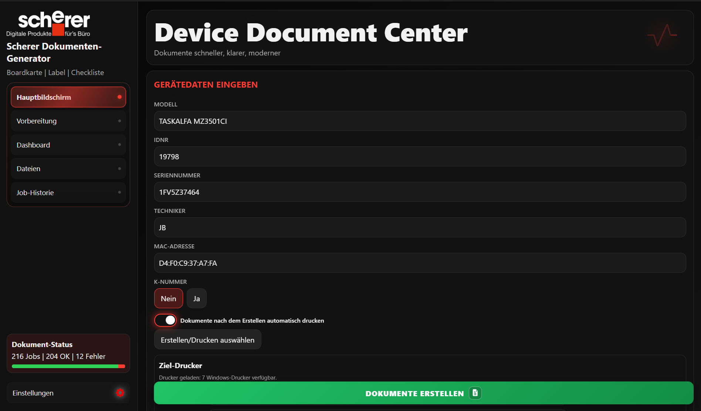

Der Scherer Dokument-Generator automatisiert Label, Boardkarte und Checkliste inklusive Druck-Workflow für Techniker im Feld.

Klare Oberfläche, schnelle Wege – gebaut für Techniker im produktiven Einsatz.
Sechs Arbeitsbereiche – Home, Dateien, Job-Historie, Dashboard, Vorbereitung und Einstellungen, jeder mit klarem Zweck.
Hier arbeitest du im Alltag am häufigsten. Du gibst Gerätedaten ein, prüfst erkannte Vorlagen und startest direkt die Dokumenterstellung. Außerdem siehst du den aktuellen Druckstatus und den Log-Verlauf.
So nutzt du die Software schnell und zuverlässig im Alltag.
In den Einstellungen kontrollieren, dass Lagerdaten, Vorlagen und Drucker korrekt geladen sind.
Manuell eingeben oder per Seriennummer / IDNR automatisch übernehmen lassen.
Boardkarte und Checkliste werden automatisch erkannt – kurz kontrollieren.
Im Dialog festlegen, welche Dokumente erstellt und welche direkt gedruckt werden sollen.
„Dokumente erstellen" starten und die Statusausgabe live verfolgen.
Unter „Dateien" und „Job-Historie" alles nachprüfen und bestätigen.
Der Druck läuft über die native C++-Druckbrücke – ein Windows-Modul für zuverlässigen Direktdruck, ohne Zusatzkonfiguration.
print_bridge.exe
Ziel-Drucker für Label, Boardkarte und Checkliste werden per Dropdown aus den Windows-Druckern gewählt – mit Live-Erreichbarkeits-Ampel und Tonerstand direkt vom Drucker (SNMP). Standard für Labels: Epson TM-C3500.
Das aktuelle Release auf GitHub herunterladen. Zugang wird manuell freigegeben.
Releases öffnenDie wichtigsten Änderungen der letzten Versionen – verständlich erklärt.